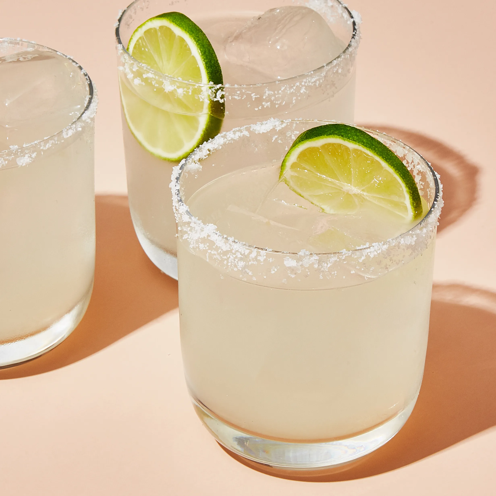

Margarita

Margaritas can be served on the rocks, frozen,
or blended with other fruits and flavors.
This makes them a great choice for any occasion.
The history of the margarita is a bit of a mystery,
as there are many different people who claim to have
invented it. However, the most likely story is that
it was created in Mexico in the 1930s.
Ingredients
- 2 ounces tequila
- 1 ounce lime juice
- 1 ounce orange liqueur (Cointreau,
Grand Marnier, or Triple Sec)
- Salt, for rimming the glass (optional)
- Lime wedge, for garnish
Steps
- If desired, rim a glass with salt.
- Combine the tequila, lime juice, and orange
liqueur in a shaker with ice.
- Shake until well-chilled
- Strain into a glass
- Garnish with lime wedge
- Enjoy!